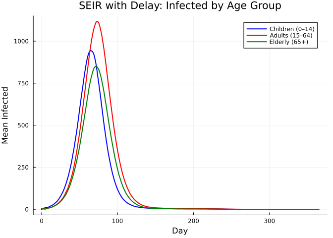
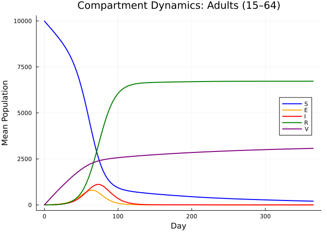
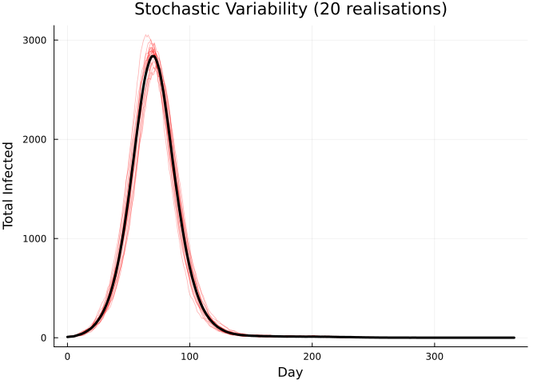
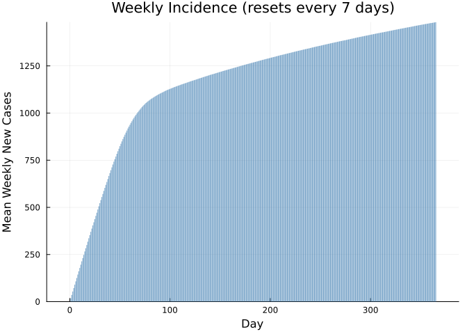
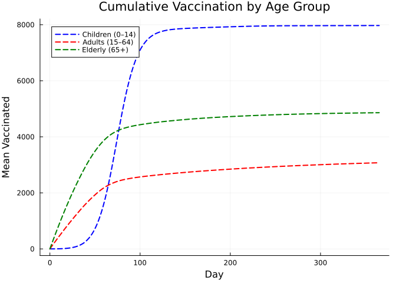
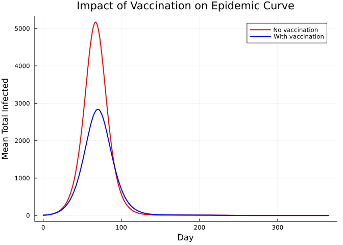

SEIR with Delay and Vaccination
Introduction
Many vector-borne and zoonotic diseases — yellow fever, Rift Valley fever, Japanese encephalitis — feature a fixed incubation period during which exposed individuals are not yet infectious, combined with vaccination campaigns that reduce the susceptible pool over time. Spillover from an animal reservoir introduces a time-varying exogenous force of infection that can trigger outbreaks even in partially vaccinated populations.
This vignette demonstrates how to combine several modelling techniques in a single stochastic SEIR model:
| Feature | Odin construct |
|---|---|
| Age-structured compartments | dim(), array indexing [i] |
| Fixed incubation delay | Shift-register array with update(E_delay[...]) |
| Time-varying spillover FOI | interpolate() with :linear mode |
| Vaccination | Binomial draw from remaining susceptibles |
| Weekly case counter | zero_every = 7 |
The model is inspired by the YellowFeverDynamics package, which uses interleaved shift registers for age-structured delay compartments.
Model Description
Compartments
For each of $a = 1, \ldots, N_\text{age}$ age groups:
\[S_a\]
— Susceptible\[E_a\]
— Exposed (tracked via shift register)\[I_a\]
— Infectious\[R_a\]
— Recovered\[V_a\]
— Vaccinated (effectively immune)
Shift-Register Delay
Rather than using an exponential or Erlang-distributed latent period, we implement a fixed delay of delay_days time steps using a shift register.
The register E_delay is a 1-D array of length $N_\text{delay} = N_\text{age} \times \text{delay\_days}$. Age groups are interleaved: positions $1 \ldots N_\text{age}$ hold the newest exposed cohort, positions $N_\text{age}+1 \ldots 2 N_\text{age}$ hold the cohort from one step ago, and so on. Each step:
- New exposed individuals enter at positions $1:N_\text{age}$.
- All other entries shift forward by $N_\text{age}$:
E_delay[(N_age+1):N_delay] ← E_delay[i − N_age]. - The oldest cohort (positions $N_\text{delay} - N_\text{age} + 1$ to $N_\text{delay}$) exits and becomes infectious.
This produces an exact delay of delay_days time steps for every individual, regardless of age group.
Force of Infection
\[\lambda(t) = \beta \frac{\sum_a I_a}{N_\text{total}} + \text{FOI}_\text{spillover}(t)\]
where $\text{FOI}_\text{spillover}(t)$ is linearly interpolated from a user-supplied schedule, representing zoonotic transmission that peaks mid-simulation.
Model Definition
using Odin
using Plots
using Statisticsseir_vacc = @odin begin
# === Configuration ===
N_age = parameter(3)
N_delay = parameter(15) # N_age × delay_days (3 × 5)
di_exit = N_delay - N_age # offset to oldest cohort in register
# === Array dimensions ===
dim(S) = N_age
dim(E_delay) = N_delay
dim(E_count) = N_age # track total exposed per age group
dim(I) = N_age
dim(R) = N_age
dim(V) = N_age
dim(N_pop) = N_age
dim(I0) = N_age
dim(vacc_rate) = N_age
dim(E_new) = N_age
dim(I_new) = N_age
dim(R_new) = N_age
dim(n_vacc) = N_age
# === Force of infection ===
I_total = sum(I)
N_total = sum(N_pop)
FOI_sp = interpolate(sp_time, sp_value, :linear)
foi = beta * I_total / N_total + FOI_sp
p_inf = 1 - exp(-foi * dt)
p_rec = 1 - exp(-gamma * dt)
# === Stochastic transitions ===
E_new[i] = Binomial(S[i], p_inf)
I_new[i] = E_delay[i + di_exit] # exit from oldest register slot
R_new[i] = Binomial(I[i], p_rec)
n_vacc[i] = Binomial(S[i] - E_new[i],
1 - exp(-vacc_rate[i] * vaccine_efficacy * dt))
# === State updates ===
update(S[i]) = S[i] - E_new[i] - n_vacc[i]
# Shift register: new entries at front, shift by N_age each step
update(E_delay[1:N_age]) = E_new[i]
update(E_delay[(N_age + 1):N_delay]) = E_delay[i - N_age]
update(E_count[i]) = E_count[i] + E_new[i] - I_new[i]
update(I[i]) = I[i] + I_new[i] - R_new[i]
update(R[i]) = R[i] + R_new[i]
update(V[i]) = V[i] + n_vacc[i]
# Weekly new infectious cases (resets every 7 days)
initial(new_cases, zero_every = 7) = 0
update(new_cases) = new_cases + sum(I_new)
# === Initial conditions ===
initial(S[i]) = N_pop[i] - I0[i]
initial(E_delay[i]) = 0
initial(E_count[i]) = 0
initial(I[i]) = I0[i]
initial(R[i]) = 0
initial(V[i]) = 0
# === Parameters ===
beta = parameter(0.4286) # R0 × gamma ≈ 3 × (1/7)
gamma = parameter(0.1429) # 1 / infectious period (7 days)
vaccine_efficacy = parameter(0.9)
N_pop = parameter()
vacc_rate = parameter()
I0 = parameter()
sp_time = parameter(rank = 1)
sp_value = parameter(rank = 1)
endOdin.DustSystemGenerator{var"##OdinModel#277"}(var"##OdinModel#277"(0, [:new_cases, :S, :E_delay, :E_count, :I, :R, :V], [:N_age, :N_delay, :beta, :gamma, :vaccine_efficacy, :N_pop, :vacc_rate, :I0, :sp_time, :sp_value], false, false, false, false, true, Dict{Symbol, Array}()))Key patterns in this model:
dim(E_delay) = N_delayallocates the shift register (15 positions for 3 age groups × 5 delay steps).update(E_delay[1:N_age]) = E_new[i]inserts newly exposed at the front.update(E_delay[(N_age+1):N_delay]) = E_delay[i - N_age]shifts everything forward by one age-block per time step.I_new[i] = E_delay[i + di_exit]reads the oldest cohort exiting the register.
Parameter Setup
pars = (
N_age = 3.0,
N_delay = 15.0, # 3 ages × 5 delay days
beta = 3.0 / 7.0, # R0 = 3, infectious period = 7 days
gamma = 1.0 / 7.0,
vaccine_efficacy = 0.9,
N_pop = [10000.0, 10000.0, 10000.0], # children, adults, elderly
vacc_rate = [0.005, 0.01, 0.002], # age-dependent daily rates
I0 = [5.0, 3.0, 2.0], # initial infections by age
sp_time = [0.0, 100.0, 150.0, 200.0, 250.0, 365.0],
sp_value = [1e-4, 1e-4, 1e-3, 1e-3, 1e-4, 1e-4],
)(N_age = 3.0, N_delay = 15.0, beta = 0.42857142857142855, gamma = 0.14285714285714285, vaccine_efficacy = 0.9, N_pop = [10000.0, 10000.0, 10000.0], vacc_rate = [0.005, 0.01, 0.002], I0 = [5.0, 3.0, 2.0], sp_time = [0.0, 100.0, 150.0, 200.0, 250.0, 365.0], sp_value = [0.0001, 0.0001, 0.001, 0.001, 0.0001, 0.0001])The spillover FOI ramps up between days 100–150, stays elevated until day 200, then drops back — mimicking a seasonal peak in zoonotic transmission.
Simulation
We run 100 stochastic realisations over one year:
n_particles = 100
times = collect(0.0:1.0:365.0)
result = simulate(seir_vacc, pars;
times = times, dt = 1.0, seed = 42, n_particles = n_particles)
println("Result shape: ", size(result), " (states × particles × times)")Result shape: (31, 100, 366) (states × particles × times)
Expected 31 statesDefine index helpers for readability:
idx_S = 1:3
idx_Ec = (3 + 15 + 1):(3 + 15 + 3) # E_count
idx_I = (3 + 15 + 3 + 1):(3 + 15 + 3 + 3)
idx_R = (3 + 15 + 6 + 1):(3 + 15 + 6 + 3)
idx_V = (3 + 15 + 9 + 1):(3 + 15 + 9 + 3)
idx_nc = 3 + 15 + 3 * 4 + 1 # new_cases
age_labels = ["Children (0–14)", "Adults (15–64)", "Elderly (65+)"]
age_colors = [:blue, :red, :green]3-element Vector{Symbol}:
:blue
:red
:greenVisualization
Infected by Age Group
p = plot(xlabel = "Day", ylabel = "Mean Infected",
title = "SEIR with Delay: Infected by Age Group",
legend = :topright)
for g in 1:3
I_mean = vec(mean(result[idx_I[g], :, :], dims = 1))
plot!(p, times, I_mean, label = age_labels[g],
color = age_colors[g], lw = 2)
end
p
All Compartments for Adults
p = plot(xlabel = "Day", ylabel = "Mean Population",
title = "Compartment Dynamics: Adults (15–64)",
legend = :right)
plot!(p, times, vec(mean(result[idx_S[2], :, :], dims = 1)),
label = "S", color = :blue, lw = 2)
plot!(p, times, vec(mean(result[idx_Ec[2], :, :], dims = 1)),
label = "E", color = :orange, lw = 2)
plot!(p, times, vec(mean(result[idx_I[2], :, :], dims = 1)),
label = "I", color = :red, lw = 2)
plot!(p, times, vec(mean(result[idx_R[2], :, :], dims = 1)),
label = "R", color = :green, lw = 2)
plot!(p, times, vec(mean(result[idx_V[2], :, :], dims = 1)),
label = "V", color = :purple, lw = 2)
p
Stochastic Variability (20 realisations)
p = plot(xlabel = "Day", ylabel = "Total Infected",
title = "Stochastic Variability (20 realisations)", legend = false)
for i in 1:min(20, n_particles)
I_tot = result[idx_I[1], i, :] + result[idx_I[2], i, :] + result[idx_I[3], i, :]
plot!(p, times, I_tot, color = :red, alpha = 0.3, lw = 0.8)
end
I_tot_mean = vec(mean(sum(result[idx_I, :, :], dims = 1), dims = 2))
plot!(p, times, I_tot_mean, color = :black, lw = 3)
p
Weekly New Cases
nc_mean = vec(mean(result[idx_nc, :, :], dims = 1))
bar(times, nc_mean, xlabel = "Day", ylabel = "Mean Weekly New Cases",
title = "Weekly Incidence (resets every 7 days)",
label = "", color = :steelblue, alpha = 0.7, linewidth = 0)
Vaccination Coverage Over Time
p = plot(xlabel = "Day", ylabel = "Mean Vaccinated",
title = "Cumulative Vaccination by Age Group",
legend = :topleft)
for g in 1:3
V_mean = vec(mean(result[idx_V[g], :, :], dims = 1))
plot!(p, times, V_mean, label = age_labels[g],
color = age_colors[g], lw = 2, ls = :dash)
end
p
Comparison: With vs Without Vaccination
pars_novacc = merge(pars, (vacc_rate = [0.0, 0.0, 0.0],))
result_novacc = simulate(seir_vacc, pars_novacc;
times = times, dt = 1.0, seed = 42, n_particles = n_particles)
I_vacc = vec(mean(sum(result[idx_I, :, :], dims = 1), dims = 2))
I_novacc = vec(mean(sum(result_novacc[idx_I, :, :], dims = 1), dims = 2))
plot(times, I_novacc, label = "No vaccination", color = :red, lw = 2,
xlabel = "Day", ylabel = "Mean Total Infected",
title = "Impact of Vaccination on Epidemic Curve")
plot!(times, I_vacc, label = "With vaccination", color = :blue, lw = 2)
Final Size Comparison
println("Final attack rates (% of age-group population):")
println("=" ^ 55)
for g in 1:3
R_vacc = mean(result[idx_R[g], :, end])
R_novacc = mean(result_novacc[idx_R[g], :, end])
ar_vacc = 100 * R_vacc / pars.N_pop[g]
ar_novacc = 100 * R_novacc / pars.N_pop[g]
reduction = ar_novacc > 0 ? 100 * (1 - ar_vacc / ar_novacc) : 0.0
println(" $(age_labels[g]):")
println(" No vaccination: $(round(ar_novacc, digits=1))%")
println(" With vaccination: $(round(ar_vacc, digits=1))%")
println(" Reduction: $(round(reduction, digits=1))%")
endFinal attack rates (% of age-group population):
=======================================================
Children (0–14):
No vaccination: 0.0%
With vaccination: 0.0%
Reduction: -122.2%
Adults (15–64):
No vaccination: 96.0%
With vaccination: 67.2%
Reduction: 29.9%
Elderly (65+):
No vaccination: 96.0%
With vaccination: 51.0%
Reduction: 46.8%Summary
This vignette demonstrated several key modelling patterns:
| Technique | Implementation |
|---|---|
| Age structure | dim(X) = N_age with X[i] indexing |
| Fixed delay | Shift register: E_delay[1:N_age] = new, E_delay[(N_age+1):N_delay] = shifted |
| Spillover FOI | interpolate(sp_time, sp_value, :linear) for time-varying zoonotic input |
| Vaccination | Sequential Binomial draws from remaining susceptibles |
| Incidence tracking | initial(new_cases, zero_every = 7) = 0 for weekly resets |
| Scenario comparison | Re-run with vacc_rate = [0, 0, 0] to quantify vaccine impact |
The shift-register delay pattern is particularly useful when the biological incubation period is well characterised (e.g. 3–6 days for yellow fever) and you want individuals to progress through the latent compartment in a fixed number of time steps rather than with exponential or Erlang-distributed timing.